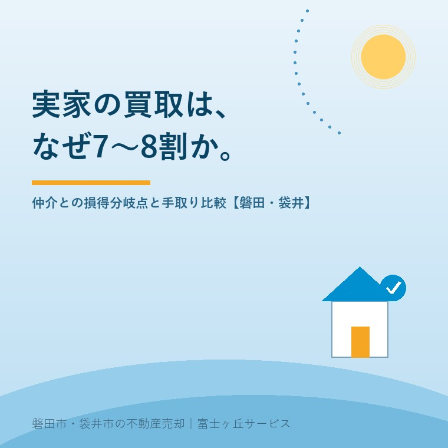

2026年8月7日｜カテゴリ：相場・地域・売却実務

この記事の要点
Q. 「すぐ現金にするなら買取もできます」と言われましたが、金額が仲介より2割以上低いのはなぜですか？ 足元を見られているのでしょうか。
A. 足元を見ているわけではなく、買う側（不動産会社）の原価計算がそのまま引かれていると考えてください。リフォーム費、仕入れ時の登記費用と不動産取得税、売れるまでの保有コストと金利、そして宅建業者が売主になると引渡しから2年以上の契約不適合責任を負う（宅地建物取引業法40条）ぶんの備え。これらを再販価格から差し引いた残りが買取価格です。ですから、比べるべきは「金額の高さ」ではなく手取り・時間・確実性の3点セット。磐田市・袋井市では、介護施設の運営から不動産事業を始めた富士ヶ丘サービスのような地域密着の会社に、仲介と買取の両方を並べて出してもらうという選択肢があります。
「お盆に兄弟が集まるので、それまでに方針を決めたい」──この時期、いちばん多いご相談です。そして必ず出てくるのが「買取だといくらですか」という質問。
お答えすると、たいてい少し表情が曇ります。仲介で売り出すなら1,000万円と言った直後に、買取なら750万円ですと言うわけですから、無理もありません。ただ、この250万円の差には、一円ずつ理由があります。今日はその内訳を、買う側の帳簿の側から開けてみます。理由が分かれば、あとはご家族の事情に照らして決めるだけです。
言葉が混ざりやすいので、最初に整理します。
| 方式 | 買主は誰か | 価格の目安 | 現金化までの期間 |
|---|---|---|---|
| 仲介 | 一般のお客様（エンドユーザー） | 市場価格。ただし売れるまで確定しない | 3か月〜1年以上。売れない可能性もある |
| 買取 | 不動産会社そのもの | 市場価格の6〜8割程度 | 合意から2週間〜1か月程度 |
| 買取保証付き仲介 | 一定期間は一般客、売れなければ不動産会社 | 期限後の買取額はあらかじめ約定（買取単独より低めのことが多い） | 仲介期間（例：3か月）＋決済 |
ポイントは、買取では不動産会社が「仲介する人」から「買う人」に変わることです。立場が変わるので、負うリスクも、かかる税金も、まったく別物になります。ここが7〜8割の正体です。
なお「買取価格は市場価格の7〜8割」は業界で広く言われる目安であって、法律や統計で決まった数字ではありません。都市部のマンションなら8割に近づき、磐田・袋井の築古の戸建てでは6割台になることもあります。次の節で、その差がどこから出るのかを見ます。
不動産会社が実家を買い取るのは、手を入れて再販するためです。仕入れ値は「再販できる価格」から逆算して決まります。再販価格1,000万円の中古戸建てを想定した、典型的な内訳がこちらです。
| 項目 | 金額 | 内容 |
|---|---|---|
| 再販価格 | ＋1,000万円 | 手を入れて売れる想定価格 |
| リフォーム・クリーニング | −100万円 | 水回り・内装。傷みが深いと200万円超も |
| 仕入れ時の登記費用・不動産取得税 | −20万円 | 所有権移転の登録免許税、司法書士報酬、不動産取得税 |
| 保有コスト（6か月想定） | −7万円 | 固定資産税・都市計画税、火災保険、電気・水道、草刈り |
| 資金コスト | −12万円 | 仕入れ資金の金利。売れ残るほど増える |
| 販売経費 | −30万円 | 広告、写真、人件費、再販時の手数料相当 |
| 契約不適合責任の備え | −20万円 | 宅建業者が売主なので引渡しから2年以上責任を負う。雨漏り・シロアリ等の想定外修繕 |
| 会社の利益 | −110万円 | 再販価格の1割前後 |
| 仕入れられる上限 | 約700万円（＝7割） |
並べてみると、いちばん重いのはリフォームと利益ではなく、その二つを合わせても半分強にすぎないことが分かります。残りは税・金利・保険・人件費といった、避けようのない実費です。だからリフォームが200万円必要な家は、そのまま100万円ぶん仕入れ値が下がって6割になる。逆に「掃除だけで売れる」状態なら8割に近づきます。買取価格は、家の状態でこそ動くのです。
もうひとつ、意外に知られていない事情があります。宅建業者が売主になると、契約不適合責任を「引渡しから2年以上」とする特約以外は買主に不利にできません（宅地建物取引業法40条）。個人同士の売買でよくある「一切免責」は使えないのです。つまり買取業者は、2年ぶんの雨漏りやシロアリを自腹で背負う覚悟で買っている。その保険料が価格に乗っています。
「安く買い叩いて儲けている」というイメージがありますが、実際には国が制度で支援している分野でもあります。国土交通省の「買取再販で扱われる住宅の取得に係る特例措置」です。
| 特例 | 誰の税金が軽くなるか | 内容と期限 |
|---|---|---|
| 不動産取得税の減額 | 買い取った宅建業者 | 既存住宅を取得し、住宅性能の一定の向上を図る改修工事を行ったうえで個人の自己居住用として譲渡する場合、業者の取得に課される不動産取得税が減額。令和9年（2027年）3月31日まで |
| 登録免許税の軽減（0.1％） | その家を買う個人 | 買取再販住宅の要件を満たす建物の所有権移転登記が0.3％→0.1％に。登記床面積50㎡以上。令和9年3月31日まで |
ここで注目していただきたいのは要件です。不動産取得税の減額は「改修工事をして、個人の自己居住用として売る」ことが条件。つまり手を入れずに右から左へ流す転売には使えない。国は「直して住まわせる事業者」を優遇しているわけです。
売主の立場からすると、これは判断材料になります。買取を打診したときに「どう直して、誰に売るつもりか」を説明できる会社かどうか。説明できる会社は再販の絵が描けているので、価格の根拠もはっきりしています。逆に絵がない会社ほど、リスクぶんを厚めに引いて安く出してきます。
売値ではなく手取りで考えるという記事で書いたとおり、比べるべきは手取りです。仲介1,000万円と買取750万円を、同じ土俵に載せてみます。
| 項目 | 仲介（1,000万円で成約） | 買取（750万円） |
|---|---|---|
| 売買代金 | ＋1,000万円 | ＋750万円 |
| 仲介手数料 | −39.6万円（3％＋6万円＋消費税） | 0円（会社が直接買う場合） |
| 残置物の処分 | −20万円 | 0円（現況のまま引取りが多い） |
| ハウスクリーニング・内覧準備 | −5万円 | 0円 |
| 売れるまでの保有コスト | −8万円（6か月ぶん） | −1.5万円（1か月ぶん） |
| 税引前の手取り | 約927万円 | 約748万円 |
差は約179万円。額面の250万円が、実質179万円まで縮まりました。仲介手数料と残置物処分がまるごと消えるのが効いています。
では、この179万円をどう見るか。判断の物差しは3つです。
目安として当社がお伝えしているのは、「1年以内に確実に売れる自信が持てない家なら、買取との差は思っているほど大きくない」ということです。逆に、駅や学校に近く買い手が並ぶ立地なら、迷わず仲介です。
なお税金の面では、買取だからといって不利になることはありません。相続した空き家を売ったときの3,000万円特別控除（令和9年12月31日までの譲渡）は、買主が不動産会社でも要件を満たせば使えます。令和6年1月1日以後の譲渡なら、譲渡の翌年2月15日までに買主が耐震改修または取壊しを完了した場合も対象になりましたので、むしろ「業者が買ってすぐ壊す」買取とは相性が良い制度です。適用可否は必ず税理士にご確認ください。
正直に申し上げます。本日8月7日（金）から、お盆（8月13日〜16日）までの現金化は、まず間に合いません。
| 時期 | やること |
|---|---|
| 1〜3日目 | 現地確認、登記事項証明書・公図・固定資産税通知書の確認。境界と越境、残置物の量を見る |
| 4〜7日目 | 買取金額の提示。複数社に依頼するならここが一番時間がかかる |
| 8〜14日目 | 売買契約。相続登記が未了ならここで止まる（相続登記の記事） |
| 15〜30日目 | 抵当権抹消・住所変更登記の準備、決済・引渡し。入金はここ |
合意から決済まで最短でも2週間、通常は1か月。名義が親のままなら、相続登記に必要な戸籍集めだけで1〜2か月かかることも珍しくありません。
ですから、お盆までにできるのは「現金化」ではなく「数字を揃えること」です。仲介ならいくら、買取ならいくら、手取りでいくら残るか。この3つの数字を持ってお盆の家族会議に臨めば、話は一度で決まります。数字がないまま集まると、「もったいない」「早く終わらせたい」という感情の話になって、次の正月まで持ち越しになる。毎年見てきた光景です。
| 買取が向いている | 仲介のほうがよい |
|---|---|
| 介護施設の入居金・月額費用の支払い期限が決まっている | 期限がなく、1年待てる |
| 相続税の納付期限（10か月）が迫っている | 納税資金に余裕がある |
| 兄弟で分けるため、金額を早く確定させたい | 相続人が1人、または全員が待てる |
| 家財が大量に残っている（遺品整理から始まる） | すでに片付いていて内覧できる |
| 雨漏り・シロアリなど不安があり、売った後に責任を負いたくない | 状態が良く、告知すべき不具合が少ない |
| 近所に売却を知られたくない（広告を出さずに済む） | 広く募集して高値を狙いたい |
とくに5番目は、実は買取の隠れた利点です。個人同士の売買で「一切免責」の特約をつけても、知っていて告げなかった事実については責任を免れません（民法572条）。買主が不動産会社なら、プロが自分の目で見て買うぶん、あとから蒸し返されるリスクは構造的に小さくなります。
当社は磐田市見付に事務所を構え、介護施設の運営から不動産に入った会社です。ご相談の多くは「入居費用の支払いが先に決まっていて、売却がそれに追いつくか」という、時間とお金が同時に走っているケース。だからこそ、仲介と買取の両方の数字を最初に並べてお出しします。片方だけ見せて誘導するようなことはしません。
買取は、安く売る方法ではありません。時間と確実性を、お金で買う方法です。介護のお金に期限があるご家庭にとって、その交換は十分に合理的なことがあります。大事なのは、交換していると自覚したうえで選ぶこと。「よく分からないまま安いほうを選ばされた」という後悔だけは、残してほしくないのです。
実家じまい相談室では、固定資産税の通知書1枚から、仲介想定額・買取想定額・それぞれの手取りを並べてお出ししています。お盆の家族会議に、この3行だけ持っていってください。
ふじがおか実家カルテ｜仲介と買取、両方の数字を並べます
お盆の家族会議に、3つの数字を。
登記情報・公図・固定資産税通知書から、再建築の可否、境界、残置物の量までを宅建士が調べ、仲介想定額・買取想定額・手取り試算を1冊にまとめてお渡しします。
本記事は2026年8月7日時点の公開情報に基づく一般的な解説です。買取価格の内訳・比率はモデルケースであり、実際の金額は物件の状態、立地、再販計画、依頼先により大きく異なります。「7〜8割」は業界で用いられる目安であり、法令や公的統計に基づく数値ではありません。譲渡所得税および特例の適用可否は税理士・税務署へ、登記は司法書士へご確認ください。個別のご相談は当社までどうぞ。

この記事を書いた人：大石浩之（宅地建物取引士）
磐田市・袋井市で「介護×相続×空き家」に特化した不動産売却支援を行う富士ヶ丘サービスの代表取締役・宅地建物取引士。介護施設の運営から不動産事業を始めた経験をもとに、売主とご家族が困らない売却を一件ずつお手伝いしています。プロフィール
磐田市・袋井市の実家じまい・相続空き家相談
固定資産税通知書だけでも相談できます
住所があいまいでも、通知書や写真から名義・道路・農地・残置物の確認順を整理します。カルテ申込またはLINEで状況を送ってください。
富士ヶ丘サービス株式会社／静岡県磐田市見付5789番地1／TEL:0538-31-3308／静岡県知事 (2) 第14083号／代表取締役・宅地建物取引士 大石 浩之